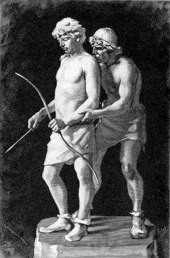
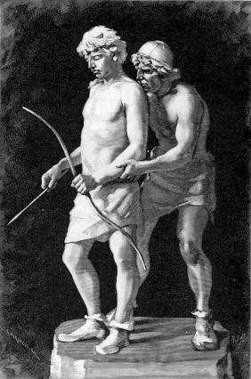

Походження та поширення германських племен
Германських племен по сьогоднішній день є предметом гарячих академічних дискусій, одначе безсумнівною є наявність чітко окреслених груп серед них, у часі їхніх перших контактів із Римською Імперією в ІІ та І ст. до нашої ери. Північ Європи заселяли англи, сакси, дани, юти та шведи, на північному заході з'являються племена франків, свеби оселяються на південному заході та готи на сході. Вони користувалися різними мовами, та племена ці не завжди були єдиною групою — кожне могло складатися з менших племен. Наприклад алемани, ймовірно, належали до свебів, або відокремились від них, а їхня мова є діалектом верхньонімецької, якою досі розмовляють у Швабії (зауважте, що назва походить від свеби).
У першому тисячолітті нашої ери, а особливо з ослабленням Римської Імперії, германські племена, багато з яких залишались напівкочовими, поширились та заселили значні території в Європі. Готи, що й собі поділилися на Остготів та Вестготів, під тиском гунів рушили на південь, та переселились в Іспанію. Франки рушили в Галлію (сучасна Франція), а вандали рушили в Іспанію, а звідти в Африку, звідки вони вислали армію, що сплюндрувала Рим в 455 р. Сакси рухались на південь уздовж узбережжя Галлії, та врешті прибули в Британію. Ломбарди, вирушивши з півночі, рушили на південь через Угорщину та Австрію, і, нарешті, алемани та бургунди заселили центральну Європу.
Взагалі кажучи, германці були язичниками, які вклонялися багатьом богам, хоча мало що відомо про їхню релігію. Природно, що під час міграції через такі значні території, внаслідок чужоземного впливу (головним чином Римського та християнського, але також кельтського та слов'янського), та власного історичного досвіду їхні релігійні погляди розвивалися по різному. Тому не існує єдиної германської міфології. Якщо не брати до уваги рунних написів та малюнків на камінні, германці так і не розвинули письмо як засіб запису історичних подій. Натомість розвинулась усна традиція, що передавалась із покоління в покоління, носіями якої були співці, чи, як вони були відомі серед самих германців, скальди. Таким чином, германську міфологію значною мірою записали чужоземці.
Вплив християнства
Германські племена зустрічалися з християнством у різний час, і в той час, коли з'являється більшість записів про їхні вірування, багато вже було втрачено під час міграції, тому християнські автори мали справу головним чином із локальними та фрагментарними віруваннями. Окрім того, християни розглядали поганські вірування як важкий гріх та не бажали зображати поганські вірування у сприятливому світлі.
У той час як готи навернулися до християнства вже у IV ст., германські племена на півночі Європи були дещо ізольовані від решти континенту, та на території сучасної Скандинавії (Данія, Швеція, Норвегія та Ісландія) поганські вірування зберігалися довший час. Племена на цій території навернулись до християнства тільки в Х та ХІ ст., а у Швеції поганство було поширене ще навіть у 1100 році. Нерівномірний розвиток племен є причиною того, що відомості про їхні вірування є дуже нерівномірно розподілені та сильно варіюють якістю. Найбагатше традиція збереглась у скандинавських країнах, особливо Ісландських сагах, що відомі під колективною назвою «Поетична», чи «Старша Едда», а також у записаній дещо пізніше Сноррі Стурлусоном «Прозовій» чи «Молодшій Едді».
Скандинавський корпус міфологічних текстів є повнішим та одноріднішим проти центральної та східної Німеччини. У минулому більшість скандинавів, як і всі германці, були поганами, що поклонялись багатьом богам та богиням, більшість із яких була відома також решті германських племен під іншими іменами. Навідоміші скандинавські божества Одін, Тор, Фрейр, Фрейя та Нйорд, але хоча нам відомі їхні імена, практично повністю відсутня надійна інформація про те, як їм поклонялись. Існують археологічні дані про поганські обряди, але практично нічого невідомо про їхнє значення. Географічні назви в сучасній Скандинавії подекуди часто містять імена поганських божеств, що вказує на наявність їхнього культу на цих територіях, але нічого не повідомляють нам про деталі релігійної практики чи ритуалів.
Список скандинавських богів
Матеріал з Вікіпедії — вільної енциклопедії.
-
Бальдр
-
Бальдр — це бог весни, краси і цноти у скандинавській міфології.
Бальдр подібний присутнім у міфології багатьох народів божествам умираючої і відроджуваної природи, що опікуються землеробством або усіма рослинами. Такі боги звичайні для міфологій і релігій народів, що живуть або жили на територіях, для природи яких характерна сезонність.
-
-
Локі
-

Локі Лейфейсон — скандинавський бог бешкетування, жартів та обману, син Фарбауті і Лауфі, та описується як «винахідник обману». Локі в певному сенсі є одночасно богом та йотуном (титани і гіганти скандинавської міфології), оскільки він був із богами протягом довгого часу. Локі був одружений двічі, спочатку з велеткою Ангрбоді, яка народила трьох чудовиськ Фенріра, Йормунганда і Гель. Усі троє успадкували темні сторони характеру батька. Другою дружиною була Сіґюн, з якою у нього було двоє синів — Валі і Нарві.
Композитор Ріхард Вагнер представив Локі під ім'ям Лоґе (Loge) у своїх операх Das Rheingold та Die Walküre.
-

-
Труда
-
Труда або Фруда (давньосканд. Þrúðr) — донька Тора та Сіф. Також це ім'я однієї з валькірій в германо-скандинавській міфології. Чи це одна й та сама особа — не відомо.
Згадується в легендах у зв'язку зі сватанням Альвіса до асів.
Також ім'я Труда фігурує на рунічному камені Карлеві на острові Еланд у Швеції як кеннінґ «бойове дерево Труди», що означає вождь.
-
-
Одін
-

О́дін (рідше О́дин[1]; давньоісланд./давньосканд. Óðinn, швед. Oden, старосаксонською Woden, старофранкською Wodan, нім. Wotan) — верховний бог пізньої германської та скандинавської міфології. Був богом смерті, мудрості, зцілення, битви, королівської влади, чаклунства, божевілля, війни, поезії, перемоги та полювання. Також, Одін міг тлумачити руни.
Для скандинавів ім'я Одіна було синонімом битви та війни. Він фігурує у міфах як бог, який дарує перемогу. Одін мав здатність змінювати зовнішність у довільний спосіб. Міфи кажуть, що він подорожує світом як одноокий дідуган із сивою бородою, який опирається на палицю та носить широкополого капелюха. Одін асоціюється із Диким Ловом, коли він несеться через небо на чолі компанії загиблих у битві. Як бог мудрості, Одін є шукачем мудрості, причому до ступеня, коли він пожертвував своє око, щоб напитися із джерела Міміра, яке дарує мудрість. Щоб відкрити руни, Одін приніс себе в жертву самому собі.
-